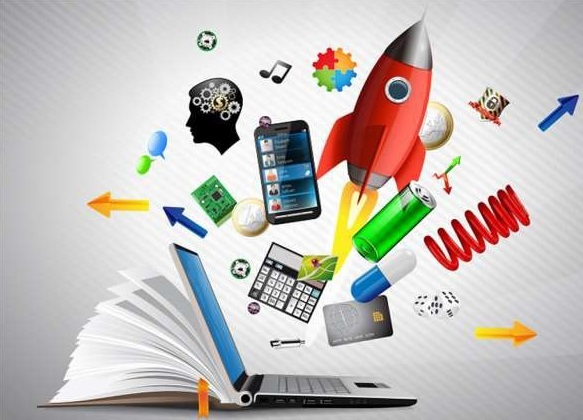

Hello there! Welcome to the world of web designing. In this page you will see about merits and demerits of evolution in tech.

Advantages and disadvantages of evolution in science and technology.
Modern technology: advantages and disadvantages:

* Today, technology is very important because it is used for almost everything and like everything, technology has advantages and disadvantages.
In the world today, people cannot live without technologies such as televisions, mobile phones, computers and others.
These technologies have slowly taken an essential part in people’s day-to-day lives and being without them would be unimaginable for some of us.
To understand technology, one must know what it provides in terms of advantages, but also disadvantages.
Advantages of technology:
* First, the evolution of technology is beneficial to humans for several reasons. At the medical level, technology can help
treat more sick people and consequently save many lives and combat very harmful viruses and bacteria.
The invention of the computer was a very important point. Communication is thus enhanced, and companies can communicate more
easily with foreign countries. Research is also simplified.For companies, progress in implementing strategic technology trends
is helping them save time and therefore, money. Exchanges are faster especially with the internet. Sales and purchases are now
facilitated and possible worldwide. This allows businesses to buy raw materials with discounts or at reduced prices. Similarly,
global tourism has grown.
* Technology has also increased the productivity of almost every industry in the world. Thanks to technology, we can even pay
with bitcoins instead of using banks. The digital coin has been such a game changing factor, that many realised that this is
the right time to open a bitcoin demo account. When observed more closely, new things are discovered every day. Let’s take for
instance when radio waves were discovered, radio broadcasts followed suit almost immediately. The same applies to the
television and electricity. If no one had discovered that electricity could be generated, then the entertainment industry
wouldn’t be at it’s current stage of development.
* Technology improves daily lives; allowing to move physical storage units
to virtual storage banks and more. Scientists of the time are also able to send astronauts to the moon thanks to technology.
In the modern industrial world, machines carry out most of the agricultural and industrial work and as a result, workers
produce much more goods than a century ago and work less. They have more time to exercise and work in safer environments.
In simple and brief words, The merits of science and technology are:
1. It will make our life easier.
2. It helps us organise our daily activities.
3. This helps our work can be done faster.
4. It helps us to communicate more easily with others.
5. This helps us to better know and understand other cultures and societies.
Disadvantages and risks of technology:
On the other hand, the evolution of modern technology has disadvantages, for example, dependence on new technology. Man no
longer needs to think. Even if the calculator is a good invention, man no longer makes mental calculation and no longer works
his memory. The decline of human capital implies an increase in unemployment. In some areas, devices can replace the human mind.
The use of technology certainly needs rule and new laws. For example internet use is an individual freedom. However, the
invention of the atomic bomb cannot be an individual freedom. In fact, regulations are difficult to implement when these
technologies are introduced – such as regulation surrounding the impending arrival of autonomous vehicles.
Finally, as most technological discoveries aim to reduce human effort, it would imply that more work is done by machines. This
equates to less work for people: the human is becoming ever so obsolete by the day, as processes become automated and jobs are
made redundant. The negative impact of the influence of technology on children should not be underestimated as well.
So, The demerits of science and technology are :
1. it can be easily handled by irresponsible people.
2. We will be too dependent on that.
3. Sometimes it affects our health and our lifestyles.
4. It destroys our simple and healthy life (the traditional lifestyle I miss).
5. Invasion of our private life.
Learn about science and technology.
Click here to go back to lock screen.